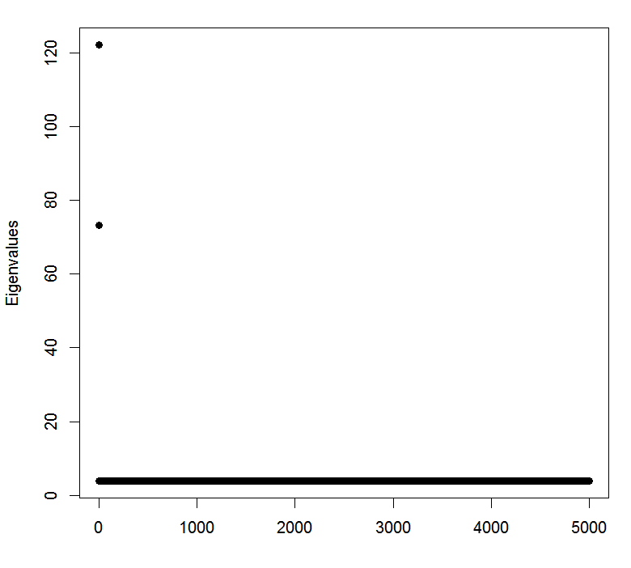
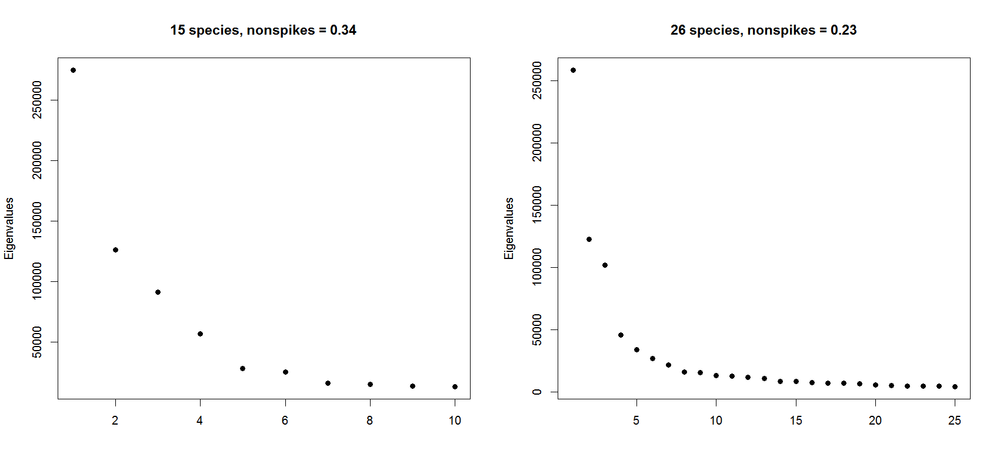

class: center, middle, inverse ## A classification of leaves #### Zheng GAO #### Anwesha Bhattacharyya #### Rounak Dey #### April 11, 2016 \[ \def\DD{\mathbf{D}} \def\EE{\mathop{\mathbb{E}}} \def\argmin{\mathop{\arg\min}} \def\argmax{\mathop{\arg\max}} \def\K{\mathcal{K}} \] --- ## Outline ### $\quad \sim \quad$ Introduction ### $\quad \sim \quad$ Dimension Reduction ### $\quad \sim \quad$ Classification and Clustering ### $\quad \sim \quad$ Conclusions --- class: top # Data set - what's in it? * Pictures of 32 spiecies, unbalanced. We are using 26 of them with 20 samples each. <center> <img src="folio data examples.png" width = 70%, align="middle"> </center> <!-- <img src="animated.gif" style="height: 20em"> --> --- class: top # Data set - what's difficult? * irregularities! - all 3 pictures of the same species * orientation, shape, color, lighting, position, angle, etc... <center> <img src="example leaves/chocolate tree/1.jpg" style="height: 5em"> <img src="example leaves/chocolate tree/2.JPG" style="height: 5em"> <img src="example leaves/chocolate tree/3.JPG" style="height: 5em"> </center> -- * Similarities! - all 4 pictures are from different species <center> <img src="example leaves/similar leaves/betel.jpg" style="height: 7em"> <img src="example leaves/similar leaves/mulberry leaf.jpg" style="height: 7em"> <img src="example leaves/similar leaves/fruitcitere.jpg" style="height: 7em", style="image-orientation: 90deg"> <img src="example leaves/similar leaves/lychee.jpg" style="height: 7em"> </center> --- class: top # Data set - standardization * We need a way to... * standardize the data * efficiently represent the data * Grey-scaling, Auto-detect image region, sub-sampling, keeping aspect ratio alongside <center> <img src="cropping/crop illustration.jpg" style="height: 10em"> <img src="cropping/crop illustration2.png" style="height: 10em"> <img src="cropping/crop illustration3.png" style="height: 10em"> <img src="cropping/crop illustration4.png" style="height: 5em"> <img src="cropping/crop illustration5.png" style="height: 5em"> </center> --- class: top # Data set - standardization * A look at the averages... <center> </center> --- class: top # How low can the number of pixels go? <center> <img src="pixelated cat.jpg" style="height: 14em"> </center> * For humans, ~ 12 by 30 is sufficient for identification of a species * For machines? * Original pictures 4000+ by 2000+ pixels, now 100 by 100? --- class: top # Dimension reduction with PCA * Idea: represent the images with low-dim vectors and 'eigen-images' * Vectorize standardized images and PCA - Example with 3 species: Bitter Orange, Chrysanthemum, Hibiscus -- - 20 samples from each species, $100\times 100$ pixels, data matrix $60\times 1k$ <center> <img src="PCA example/bitter orange.png" style="height: 8em"> <img src="PCA example/chrysanthemum.png" style="height: 8em"> <img src="PCA example/hibiscus.png" style="height: 8em"> </center> --- class: top # Dimension reduction with PCA * Idea: represent the images with low-dim vectors and 'eigen-images' * Vectorize standardized images and PCA - Example with 3 species: Bitter Orange, Chrysanthemum, Hibiscus - 20 samples from each species, $100\times 100$ pixels, data matrix $60\times 1k$ - PCA produces the 'eigen-images', and <center> <img src="PCA example/PCA.png" style="height: 12em"> </center> --- class: top # Dimension reduction with PCA * Idea: represent the images with low-dim vectors and 'eigen-images' * Vectorize standardized images and PCA - Example with 3 species: Bitter Orange, Chrysanthemum, Hibiscus - 20 samples from each species, $100\times 100$ pixels, data matrix $60\times 1k$ - PCA produces the 'eigen-images', and - Scores of each sample, from which we can reconstruct the images <center> <img src="PCA example/projection_on_PCs_BO.png" style="height: 8em"> <img src="PCA example/projection_on_PCs_Ch.png" style="height: 8em"> <img src="PCA example/projection_on_PCs_Hi.png" style="height: 8em"> </center> images reconstructed with 5PC's, 10PC's and the original image --- class: middle <center> </center> <center> A glimpse of the data in 3D, the first two PC scores and aspect ratios, of the first 8 species. </center> --- class: top # PCA in High-dimensional Data * $1000 \times 1000$, i.e. $1M$ dimensions: Very much in the high-dimensional data domain. * It is a lot different from the usual PCA. -- * Problems: - Consistency: The sample eigenvalues and eigenvectors are not consistent estimators of the population eigenvalues and eigenvectors. - Shrinkage: The predicted PC scores are biased towards zero. (Paul $[2007]$, Johnstone $[2001]$, Lee et al. $[2010]$) --- class: top # Consistency problem - an intuition * The sample covariance matrix converges to the population covariance matrix element-wise. * Trace of the sample covariance matrix almost surely converges to the trace of the population covariance matrix. * Sum (sample eigenvalues) $\rightarrow$ Sum (population eigenvalues) * $p$ many positive population eigenvalues, $n-1$ many positive sample eigenvalues. * The sample eigenvalues has to be inflated!! --- class: top # Shrinkage Phenomenon: example ### $p=5000$ dimensions and $n=100$ samples, $3$ groups <center> </center> --- class: top # Shrinkage Phenomenon: in Folio data * 26 species, visually not very clear, but still. * The training scores are much more spread out than the test scores. <center> </center> * Need to make them comparable in scale --- class: top # Further problems * Not the usual asymptotics - $p\rightarrow \infty, n\rightarrow \infty$. How do you define consistency? - How do you imagine a vector whose dimension goes to $\infty$? -- * A model to the rescue - $p\rightarrow \infty, n\rightarrow \infty, p/n\rightarrow \gamma <\infty$. - Spiked Population Model. Johnstone $[2001]$ --- class: top # Spiked Population Model ### All population eigenvalues are equal except for finitely many large ones called the Spikes. <center>  </center> --- class: top # Solution ### Lee et al. $[2010]$ provided a method based on the Spiked Population model. * Estimation of Spikes: - $\lambda$: a population spike. - $\alpha$: the population non-spike (all equal). - $d$: the corresponding sample spike. $$\hat{\lambda}=0.5\times\left [d+\alpha-\gamma\alpha+\sqrt{(d+\alpha-\gamma\alpha)^2-4d\alpha} \right ]$$ * Provided an algorithm to find out the number of spikes and estimate the non-spike $\alpha$. --- class: top # Shrinkage Factor * The ratio of the standard deviations of the training and test scores: - $p_k$: projection of a training sample along the $k^{th}$ sample eigenvector. - $q_k$: projection of a new data along the $k^{th}$ sample eigenvector. - Asymptotic Shrinkage Factor, $$\frac{sd(q_k)}{sd(p_k)}\xrightarrow{p} \frac{\lambda_k-\alpha}{\lambda_k+\gamma\alpha -\alpha} $$ --- class: top # Back to the folio data * Dimension reduction steps: - Perform usual PCA on the training data. - Find out the number of spikes or high signals. - For 15 species: 10 spikes. - For 26 species: 25 spikes. - Calculate the PC scores of the test data. - Adjust the predicted test data scores for the shrinkage bias. -- * Now the training scores and test scores are comparable. * Apply classification methods on the training scores, and calculate the accuracy using the test scores. --- class: top # Estimated Population Spikes <center>  </center> --- class: top # Analysis of variance <center> </center> * Estimated Signal to Noise ratios: - For 15 species: $66:34$ - For 26 species: $77:23$ * SNR improves in 26 species, because we have more $n$ and number of classes, but $p$ remains unchanged. --- class: top # Analysis of variance * Cumulative proportion of variance explained by PCs. <center> </center> * Proportion of true signal explained by the PCA: - For 15 species: $97.99\%$ - For 26 species: $98.26\%$ --- class: top # Eigen-images ### First five eigen-images from the PCA on 15 species: <center> </center> ### First five eigen-images from the PCA on 26 species: <center> </center> --- class: top # Classification - Regression Trees * First decision node uses the aspect ratio... * Most of the branching uses low order PC's <center> <img src="classification/full tree.png" style="height: 13em"> </center> CV and test error stand at ~$40\%$. --- class: top # Classification - KNN * Aspect ratio needs to be scaled * optimal k need to be chosen <center> </center> --- class: top ## KNN <center> <img src="classification/Half data error rates.png" style="height: 16em"> </center> CV and prediction error on half data, k=3 in KNN --- class: top ## KNN <center> <img src="classification/Full data error rates.png" style="height: 16em"> </center> CV and prediction error on full data, k=3 in KNN --- class: top # Classification - Results * Achieved ~94.5% accuracy on 15 species * Achieved ~88.5% accuracy on 26 species ### Some species appear to be more difficult to classify - We'll see why, through clustering --- class: top # Clustering - K-means <center> <img src="clustering/half kmeans choose k.png" style="height: 12em"> <img src="clustering/full kmeans choose k.png" style="height: 12em"> </center> Choice of K in Kmeans clustering for half data set (left) and for full data set (right). --- class: top # Clustering - K-means <center> <img src="clustering/half clustering.png" style="height: 16em"> </center> 15 species into 10 clusters --- class: top # Clustering - K-means <!-- ### Half data: species (1,2,10), (18,28), (4,19) and (13,27) are clustered. --> <!-- ### Full data: species (2,10), (11,18,25,28), (8,17), (1,19), (3,27), and (4,21) are clustered. --> A quick look at (2,10): (Barbados Cherry, Coeur demoiselle) <center> <img src="example leaves/similar leaves/barbados cherry.jpg" style="height: 5em"> <img src="example leaves/similar leaves/coeur demoiselle.jpg" style="height: 5em"> </center> (18,28): (Guava, Star apple) <center> <img src="example leaves/similar leaves/guava.jpg" style="height: 5em"> <img src="example leaves/similar leaves/star apple.jpg" style="height: 5em"> </center> (4,21): (Betel, Ketembilla) <center> <img src="example leaves/similar leaves/betel2.jpg" style="height: 5em"> <img src="example leaves/similar leaves/ketembilla.jpg" style="height: 5em"> </center> --- class: top # Some typical errors identified Papaya misclassified as Chocolate Tree <center> <img src="typical errors/bad papaya.jpg" style="width: 4.5em"> <img src="typical errors/average chocolate tree.png" style="width: 4.5em"> <img src="typical errors/average papaya.png" style="width: 4.5em"> </center> Ketembilla misclassified as Ashanti Blood <center> <img src="typical errors/bad ketembilla.jpg" style="width: 4.5em"> <img src="typical errors/average ashanti blood.png" style="width: 4.5em"> <img src="typical errors/average ketembilla.png" style="width: 4.5em"> </center> --- class: top # Some typical errors identified Star Apple and Pomme Jacquot <center> <img src="typical errors/bad star apple.jpg" style="width: 6em"> <img src="typical errors/average pomme jacquot.png" style="width: 6em"> <img src="typical errors/bad pomme jacquot.jpg" style="width: 6em"> <img src="typical errors/average star apple.png" style="width: 6em"> </center> * Classifier identifies overall shapes, but is not able to pick up detailed, distinct features salient to human eyes --- class: top # References * D. Paul. Asymptotics of sample eigenstructure for a large-dimensional spiked covariance model. Statist. Sinica, 17(4):1617-1642, 2007. * Iain M. Johnstone. On the distribution of the largest eigenvalue in principal components analysis. Ann. Statist., 29(2):295-327, 04 2001. * Seunggeun Lee, Fei Zou, and Fred A. Wright. Convergence and prediction of principal component scores in high-dimensional settings. Ann. Statist., 38(6):3605-3629, 12 2010. --- class: middle <center> <h1> $\sim \sim$ FIN $\sim \sim$ </h1> </center> .footnote[Slides made entirely with Markdown, Remark.js, MathJax, and animated GIFs]